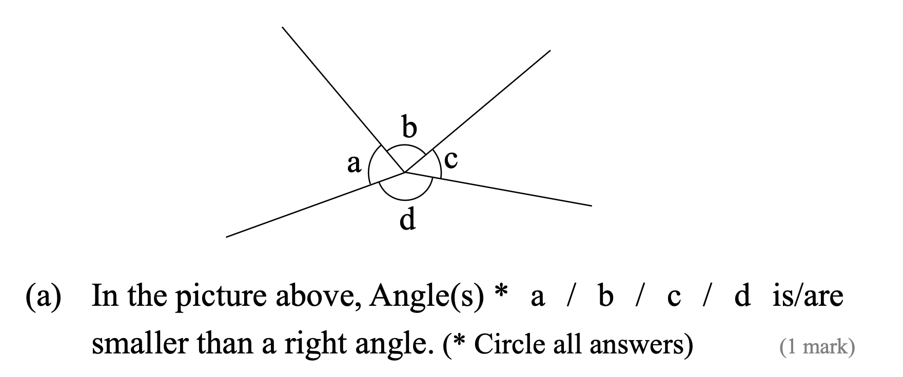
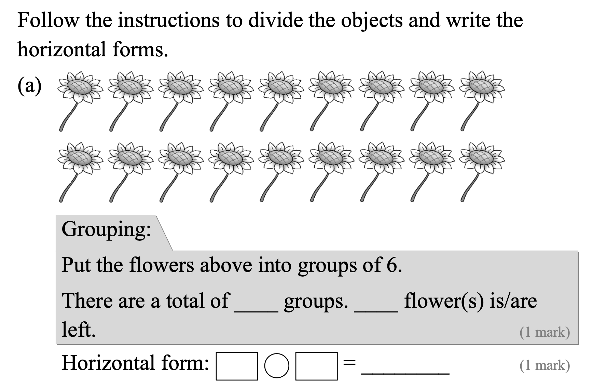

They ________ (play) table tennis now.
Answer:
已掌握
| # | 中文意思 | 例句/提示 | 英文默写 | 已掌握 |
|---|---|---|---|---|
| noun 名词 | ||||
| 1 | 朋友 | My is kind. | ||
| 2 | 主人 | The dog loves its . | ||
| 3 | 野餐 | We have a in the park. | ||
| 4 | 音乐 | I can use in class. | ||
| 5 | 斑马 | I can use in class. | ||
| 6 | 爪子 | The cat has a sharp . | ||
| 7 | 活动 | This is fun. | ||
| 8 | 厨师 | The cooks dinner. | ||
| 9 | 心 | My beats fast. | ||
| 10 | 顺序 | Please put them in . | ||
| 11 | 诊所 | I can use in class. | ||
| 12 | 医生 | I can use in class. | ||
| 13 | 腰带 | He wears a black . | ||
| phrase 短语 | ||||
| 14 | 小学 | I can use in class. | ||
| 15 | 整理书架 | I can use in class. | ||
| adjective 形容词 | ||||
| 16 | 饥饿的 | I am now. | ||
| adjective/adverb 形容词/副词 | ||||
| 17 | 早的；早地 | I get up . | ||
| verb/noun 动词/名词 | ||||
| 18 | 改变，找零 | I can my answer. | ||
| uncategorized 未分类 | ||||
| 19 | 理解 | I can use in class. | ||
| 20 | 遮盖 | I can use in class. | ||
| # | 单词/词组 | 中文意思 | 例句/说明 | 已掌握 |
|---|---|---|---|---|
| adjective 形容词 | ||||
| 1 | different | I can use different in class. | ||
| 2 | brave | The brave boy helps others. | ||
| noun 名词 | ||||
| 3 | riddle | I can solve the riddle. | ||
| 4 | buffet | We had lunch at a buffet. | ||
| 5 | packet | I bought a packet of biscuits. | ||
| 6 | fin | A fish has a fin. | ||
| 7 | housewife | The housewife is cooking. | ||
| 8 | shelf | I can use shelf in class. | ||
| 9 | blog | I can use blog in class. | ||
| 10 | piece | I want one piece of paper. | ||
| 11 | roundabout | The roundabout is in the playground. | ||
| 12 | tutor | My tutor helps me study. | ||
| 13 | picnic | We have a picnic in the park. | ||
| verb 动词 | ||||
| 14 | celebrate | We celebrate my birthday. | ||
| 15 | collect | I collect stamps. | ||
| phrase 短语 | ||||
| 16 | look at | I can use look at in class. | ||
| noun/verb 名词/动词 | ||||
| 17 | survey | We do a survey in class. | ||
| adjective/noun 形容词/名词 | ||||
| 18 | round | The ball is round. | ||
| uncategorized 未分类 | ||||
| 19 | end-year | I can use end-year in class. | ||
| 20 | remember | I can use remember in class. | ||
| 21 | blanks | I can use blanks in class. | ||
| 22 | suitable | I can use suitable in class. | ||
| 23 | improvement | I can use improvement in class. | ||
| 24 | shout | I can use shout in class. | ||
| 25 | thief | I can use thief in class. | ||
| 26 | model | I can use model in class. | ||
| 27 | farming | I can use farming in class. | ||
| 28 | knowledge | I can use knowledge in class. | ||
| 29 | lollies | I can use lollies in class. | ||
| 30 | adult | I can use adult in class. | ||
| # | 中文意思 | 例句/提示 | 英文默写 | 已掌握 |
|---|---|---|---|---|
| time/date 时间日期 | ||||
| 1 | 二月 | is the second month. | ||
| 2 | 三月 | is the third month. | ||
| 3 | 十二月 | is the twelfth month. | ||
| 4 | 星期四 | is a weekday. | ||
| 5 | 星期日 | is a weekend day. | ||
| time unit 时间单位 | ||||
| 6 | 月 | A has many days. | ||
| 7 | 日 | A has 24 hours. | ||
| directions 方向 | ||||
| 8 | 西 | The sun sets in the . | ||
| numbers 数字 | ||||
| 9 | 6 | is 6. | ||
| 10 | 7 | is 7. | ||
| 11 | 千 | One is 1000. | ||
| ordinal numbers 序数 | ||||
| 12 | 第二 | This is the shape. | ||
| solid shape 立体图形 | ||||
| 13 | 三棱柱 | A has triangular faces. | ||
| 14 | 六棱柱 | A has hexagonal faces. | ||
| 15 | 五棱锥 | A has pentagonal faces. | ||
| # | 单词/词组 | 中文意思 | 例句/说明 | 已掌握 |
|---|---|---|---|---|
| operations 运算 | ||||
| 1 | addition | Addition means putting numbers together. | ||
| geometry 几何 | ||||
| 2 | right angle | A right angle is 90 degrees. | ||
| 3 | grid | A grid helps us find positions. | ||
| 4 | curve | Draw a curve. | ||
| 5 | opposite side | The opposite sides are equal. | ||
| 6 | adjecent side | I can read adjecent side in a math question. | ||
| question word 题目词 | ||||
| 7 | calculate | Calculate the answer. | ||
| 8 | estimate | Estimate the answer first. | ||
| 9 | onwards | Count onwards from 20. | ||
| 10 | match | Match the number to the word. | ||
| 11 | respectively | Tom and Ben have 2 and 3 books respectively. | ||
| answer 答案 | ||||
| 12 | result | Check the result after you calculate. | ||
| comparison 比较 | ||||
| 13 | fewer | There are fewer apples in this box. | ||
| 14 | most | Which group has the most? | ||
| 15 | fewest | Which group has the fewest? | ||
| time/date 时间日期 | ||||
| 16 | non-leap year | A non-leap year has 365 days. | ||
| position 位置 | ||||
| 17 | behind | The bag is behind the chair. | ||
| 18 | below | The box is below the table. | ||
| 19 | front | The door is at the front of the room. | ||
| 20 | back | The desk is at the back of the room. | ||
| 21 | above | The clock is above the board. | ||
| operations calculation 运算 | ||||
| 22 | difference | The difference is the answer in subtraction. | ||
| 23 | subtract A from B | I can read subtract A from B in a math question. | ||
| 24 | equally | Share the apples equally. | ||
| teacher math vocabulary 老师数学词汇 | ||||
| 25 | start | I can read start in a math question. | ||
| 26 | stop | I can read stop in a math question. | ||
| measurement 测量 | ||||
| 27 | measure | We measure the length with a ruler. | ||
| 28 | height | Measure the height of the box. | ||
| data charts 统计图 | ||||
| 29 | pictogram | Read the pictogram. | ||
| 句型结构 | ||||
| 30 | Angle ... is smaller than Angle ... | Angle A is smaller than Angle B. | ||



